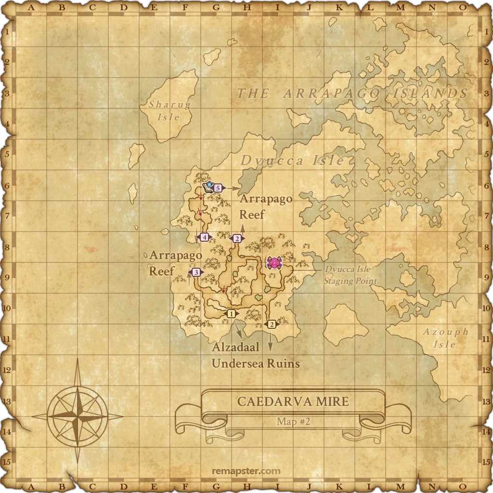

Level 75 reference · Zenith rules
|


Image source
Walkthrough
- Aht Urhgan Whitegate
- Watch the cutscene which was triggered to end the last mission.
- Go to the Chamber of Passage (K/L-7/8) and take the Runic Portal to Dvucca Isle Staging Point
- Caedarva Mire (Map 2)
- From the Dvucca Isle Staging Point (I-9) travel west to (F-9) where you will find the Arrapago Reef entrance #3.
- Arrapago Reef (Map 5)
- You will zone in at (H-10)
- Travel North to (H-8) where you will find the "Cutter" on the Western shoreline (see The Cutter map)
- Approach the Cutter for an initial cutscene, you can select either option when prompted; don't worry, you will not trigger the fight at this time.
Alternate Path(Longer but Safer)
- Go to the Chamber of Passage (K/L-7/8) and take the Runic Portal to Nyzul Isle Staging Point
- Alzadaal Undersea Ruins (Nyzul Isle Map)
- From the Nyzul Isle Staging Point (J-8) travel west to (G-8) where you will take the Arrapago Remnats (C)
- You will zone in at (H-7).
- Take the pad to your right to Caedarva Mire (H)
- You will zone in at (G-8).
- Take the zone at (E-7/8)to Caedarva Mire (1).
- Caedarva Mire (Map 2)
- From (G-10) travel northwest to (F-9) where you will find the Arrapago Reef entrance #3.
- Arrapago Reef (Map 5)
- You will zone in at (H-10)
- Travel North to (H-8) where you will find the "Cutter" on the Western shoreline (see The Cutter map)
Battlefield The Ashu Talif:
- Capped at 75, 6 characters allowed, and double dark weather conditions.
- "Cutter" is the entrance to the BCNM.
- This fight is similar to an Assault mission: all buffs (except food) will be removed upon entering. As soon as one person enters the BC, the entire party will be teleported inside the BC automatically provided that they are in close proximity to the BC entrance. (Note: All members must have the Ephramadian Gold Coin key item to participate in this battle, including members who have already cleared the mission. To obtain a new coin, simply click on the grave of the NM from the previous mission.)
Part One:
- Five Fomors (Ashu Talif Crew) will attack: Two RNG, Two RDM, and One COR.
- They use all standard Fomor moves.
- They can be slept with Sleepga (Elemental Seal is recommended; however, it is not required).
- Lullaby seems to get resisted.
- NPC Gessho (Yagudo) will assist you during the fight.
- He spends most of his time casting Elemental and Enfeebling Ninjutsu.
- He can be the target of any spells that can be cast outside of the party (eg. Haste).
- Although he has a ton of HP and can generally take care of himself, you may want to consider assisting him to choose the targets.
- It's best to assist Gessho and gang up on the mob he's currently targetting, killing them one by one instead of spreading out attacking multiple fomors at the same time. This will make this 1st part of the battle easier and end faster. This tactic especially works if you have a WHM or BLM who cast Elemental Seal + Sleepga on them before zerging.
- The battle will start when you engage the monsters so there is time to buff; however, Gessho will get impatient and start attacking after approximately 1-2 minutes, so the time window to buff is small.
Part Two:
- After the initial five Fomor are defeated, another set will respawn, this time as two RNG, one RDM, and one MNK.
- The Ashu Talif Captain will spawn instead of the 2nd RDM.
- He can use a powerful weaponskill called Vulcan Shot which does about 700 AoE damage around his target.
- Getting him down to 20% HP will result in victory.
- The Fomors are fairly low level, perhaps around 60. The Captain is significantly higher, perhaps 70. Level 75 melees will have capped accuracy without sushi.
- After the fight, you are automatically dropped in Nashmau and receive a long cutscene with Gessho. The beginning of this cutscene marks the beginning of Mission 16. Note: If you have already completed the mission and are doing it again to assist others, you will be left on the dock by "The Cutter" after the fight.
Suggestions
- Decent Geared PLD/BLU eating Tavnazian Tacos with Phalanx II can easily supertank all the mobs while everyone else slowly picks mobs off one by one. Mobs will hit the pld for 0-1 points of damage, no outisde support needed.
- If you have a BLM in your party, save Elemental Seal + Sleepga II for when the captain comes out. This will make things a lot easier.
- Alternatively, use it at the beginning, then kite the last mob of the first round until Elemental Seal is ready again.
- Also, a well-off WHM can Elemental Seal + Sleepga the mobs if they wake up early.
- You may also opt to let your WHM Elemental Seal + Sleepga on the 1st wave of fomors, then let your BLM do his/her Elemental Seal + Sleepga II on the 2nd wave when the captain comes in. You may do it in the reverse order if desired.
- A 75 BRD, even with full merits and an Apollo's Staff will have a terrible time trying to sleep the fomors, as they seem to be very resistant to Horde Lullaby.
- Save 2hr's for when the captain comes out. This will again ensure the fight goes smoothly.
- Most level 70+ players should be able to solo one of the Crew with no trouble.
Important Notes
- In order to enter the battlefield again, either because you didn't win the first time or to assist others, you'll need another Ephramadian Gold Coin key item.
- Return to Caedarva Mire (E-10) and click on Jazaraat's Headstone again for a new coin. You don't have to fight him again.
- Ensure that only one person in your party triggers the BCNM fight. Otherwise you can be put back at the docks.
Game Description
- Mission Orders
- A mercenary colleague has reported feeling an ominous presence to the west of Dvucca Isle...
Adapted from Eden Wiki: Aht Urhgan Mission 15: The Black Coffin · Contributors and history · CC BY-SA 4.0. Revision 24160. Layout, links and optional background text adapted for Zenith.